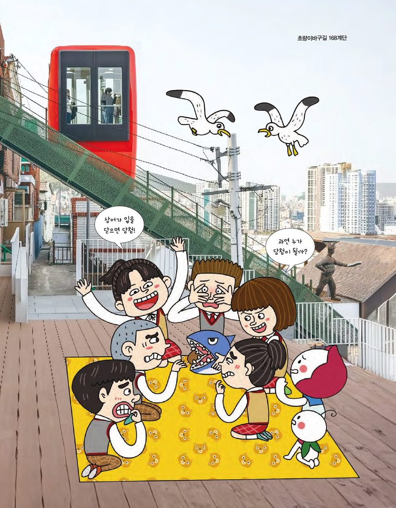

168계단을 걸어 올라갈 사람을 어떻게 정해야 공평할까요? 수학의 힘을 빌려 함께 생각해 보세요.
★ 이 단원에서는 — 실생활과 관련된 사건의 확률을 구하고, 의사결정을 위한 예측에 이용할 수 있다.

📍 초량이바구길 168계단9명의 친구가 순서대로 이빨을 하나씩 누릅니다. 몇 번째 친구가 당첨될까요?
| 순서 | 1 | 2 | 3 | 4 | 5 | 6 | 7 | 8 | 9 |
|---|---|---|---|---|---|---|---|---|---|
| 당첨 횟수 | 0 | 0 | 0 | 0 | 0 | 0 | 0 | 0 | 0 |
총 0게임
첫 번째: 1/9. 두 번째: (첫 번째가 안 걸릴 확률) × (남은 8개 중 걸릴 확률) = 8/9 × 1/8 = 1/9. 세 번째: 8/9 × 7/8 × 1/7 = 1/9 … 모든 순서가 똑같이 1/9예요! 위의 실험 막대그래프가 고르게 되는지 확인해 보세요.
위쪽(나): 칸을 누르면 사람이 1명 늘어요(− 를 누르면 줄어요). 20명을 배치하세요. 아래쪽은 AI가 배치해요 — 주사위를 던지기 시작하면 보여요.
합 2~12가 나오는 경우의 수(36가지 중). 1은 절대 나올 수 없어요!
'짝수'·'홀수'는 3/6, '소수'(2,3,5)도 3/6, 숫자 한 개는 1/6. 짝수·홀수·소수 칸이 많이 지나는 줄이 완성되기 쉬워요.
아래쪽 6개 끈을 묶는 모든 경우: 5 × 3 × 1 = 15가지. 위쪽에서 (a,b), (c,d), (e,f)가 이미 이어져 있다면, a와 b는 묶으면 안 되니 a와 묶을 수 있는 끈은 4가지, 그다음 b와 묶을 수 있는 끈은 2가지, 나머지 1가지 → 4×2×1 = 8. 확률은 8/15 ≈ 53%! 생각보다 높지요? (세 개: 1/15, 두 개: 6/15)
푸리와 매매는 달고나를 8개씩 걸고 5번 먼저 이기는 사람이 모두 갖기로 했어요. 그런데 푸리 3승, 매매 2승에서 게임이 중단됐어요. 어떻게 나누는 것이 공평할까요?
17세기 프랑스의 드 메레는 중단된 주사위 게임의 상금을 어떻게 나눌지 파스칼에게 물었고, 파스칼과 페르마는 편지를 주고받으며 "앞으로 벌어질 모든 경우의 수"를 따져 각자가 최종 승리할 확률대로 나누는 것이 공정하다고 결론 내렸어요. 이것이 득점 문제(Problem of Points)이고, 확률론이 태어나는 계기가 되었어요.